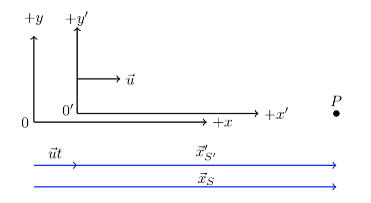

C5.1 Galilean Relativity: Coordinate Transformation#
C5.1.1 Motivation#
Galilean Relativity provides the framework for relating events and coordinates in classical mechanics. It is the structure within which Newtonian dynamics operates and describes the physics of everyday life.
Example 1 – Person Walking on a Train
A person standing on the ground observes a train passing by at 40.0 mph (it is always a train—but at least it is not spherical). Inside the train, one passenger is sitting still while another walks down the aisle at 3.00 mph in the same direction as the train’s motion.
The seated passenger measures the walking speed as 3.00 mph.
The observer on the ground measures the walking speed as 43.0 mph.
This matches our common-sense expectation and is exactly the result obtained using Galilean relativity.
The mathematical framework for Galilean relativity is three-dimensional Euclidean space \(\mathbb{R}^3\), where a point is described by three real numbers known as the Cartesian coordinates. In linear algebra language, classical mechanics is formulated within a vector space (more precisely, an inner product space) associated with \(\mathbb{R}^3\).
Within this space, we define the Euclidean norm,
which represents the length of a vector. This allows us to define Euclidean distance as the separation between two points and is equivalent to the magnitude of a displacement vector when an object moves from one location to another.
In Newtonian physics, we analyze interactions (or the absence of interactions) occurring in both space and time. We describe observations in terms of events. An event requires:
Three spatial coordinates \((x, y, z)\) or a position vector \(\vec{r}\) relative to a chosen reference frame
One time coordinate \(t\) measured by an observer’s clock
Thus, an event in classical mechanics is specified by
The importance of Galilean relativity lies in its use of coordinate transformations. Different observers moving at constant velocity relative to one another may assign different spatial coordinates to the same event. Coordinate transformations provide the rules that relate these descriptions.
Without coordinate transformations, physics would depend on the observer. With them, we can show that while position and velocity depend on the chosen frame, the structure of Newton’s laws remains the same in all inertial frames.
Galilean relativity therefore ensures the internal consistency of classical mechanics and provides the conceptual foundation for understanding motion as fundamentally frame-dependent.
C5.1.2 Galilean Invariance — Historical Background#
Galilean Invariance
One of the deepest assumptions in classical physics is that the laws of physics are the same in all inertial reference frames. This principle is known as Galilean invariance (or classical relativity).
The Classical View#
After Galileo and Newton, scientists came to believe that:
If two observers move at constant velocity relative to one another, they should describe nature using the same fundamental laws.
Mathematically, this means that if we perform a Galilean coordinate transformation between two inertial frames the form of the laws of mechanics does not change.
For example:
Newton’s Second Law
\[ \vec{F} = m\vec{a} \]has the same form in all inertial frames because acceleration is invariant under Galilean transformations.
This invariance was extraordinarily successful. It correctly described:
Planetary motion
Projectile motion
Collisions
Mechanics of fluids and solids
For more than two centuries, physicists believed that all laws of nature must be Galilean invariant.
The Electromagnetic Challenge#
In the 19th century, however, a new theory emerged: Maxwell’s equations of electromagnetism.
Maxwell’s equations predicted something remarkable:
Electromagnetic waves propagate at a fixed speed \(c\) in vacuum.
If Galilean velocity addition were universally correct, different observers moving relative to the source should measure different speeds of light. But Maxwell’s equations do not allow that. The speed \(c\) appears as a universal constant.
This created a deep inconsistency:
Newtonian mechanics assumed Galilean invariance.
Maxwell’s equations did not appear to be Galilean invariant.
For decades, physicists attempted to reconcile this conflict, introducing ideas such as the “luminiferous ether” — a preferred frame in which light propagated.
The Turning Point#
Experiments (most famously the Michelson–Morley experiment) failed to detect any preferred frame.
The resolution came in 1905 with Einstein’s theory of Special Relativity, which replaced Galilean transformations with Lorentz transformations. In this new framework:
The speed of light is invariant.
Time is no longer absolute.
Galilean invariance is replaced by Lorentz invariance.
Why This Matters Here#
In this module, we remain entirely within the domain of classical mechanics, where Galilean invariance works perfectly.
However, understanding its historical development is important because:
It shows that invariance principles guide physics at a deep level.
It illustrates how conflicts between theory and experiment lead to revolutionary changes.
It prepares us conceptually for later discussions of relativity.
Galilean invariance is not just a mathematical rule — it is a statement about how nature behaves and how scientists reason about universal laws.
C5.1.3 Derivation of Galilean Coordinate Transformation#
Consider two observers, \(S\) and \(S'\), each located at the origin of their respective reference frames. Let frame \(S'\) move with a constant velocity \(\vec{u}\) relative to \(S\). (The choice of the symbol \(\vec{u}\) will become useful later.)
Importantly, \(\vec{u}\) is the velocity of \(S'\) as measured by \(S\).
An event described in frame \(S\) has coordinates
while the same event described in \(S'\) has coordinates
Simplifying Assumptions#
To focus on the essential physics, we introduce several simplifying assumptions. In more general situations, additional offsets or rotations could be included, but these do not change the core idea.
We consider a single event: the measurement of the position of a point \(P\).
The coordinate systems \(S\) and \(S'\) are aligned so that their \(x\), \(y\), and \(z\) axes are parallel. (If they were not aligned, they could be related by spatial rotations.)
We restrict attention to linear motion and let \(S'\) move with constant velocity \(\vec{u}\) in the positive \(x\)-direction relative to \(S\).
When the two observers (origins) coincide (\(x = x' = 0\)), they synchronize their clocks such that $\( t = t' = 0 \)$ at that instant.
Why These Assumptions Are Reasonable#
Most of these assumptions simply eliminate constant offsets:
If the clocks were not synchronized, the two observers would measure different time values for the same event. For example, an observer in California and one in Utah might report times differing by two hours due to time zones. Accounting for that constant offset resolves the discrepancy.
Synchronizing the clocks when the origins coincide removes any constant spatial offset between coordinate systems.
These simplifications do not restrict the physics — they merely remove constant shifts that would otherwise clutter the derivation. Make sure you understand how each assumption impacts the analysis.
Now, on to the important part.
Geometric Setup#
The figure below illustrates the configuration we are working with.

Observer \(S\) measures a position vector \(\vec{x}_S\) at time \(t\), while observer \(S'\) measures a position vector \(\vec{x}'_{S'}\) at time \(t'\).
As time progresses, the two observers become separated in space. From the perspective of \(S\), the origin of \(S'\) moves away by a displacement
The figure below shows this displacement added to the original sketch.

By graphical vector addition (think head-to-tail), we obtain
Galilean Coordinate Transformation - 1D
This is the Galilean coordinate transformation for one-dimensional motion (expressed here in vector form).
It states that the position measured in frame \(S\) equals the position measured in frame \(S'\) plus the displacement of the moving frame itself.
Box Activity 1 – Lightning Seen from the Nozomi (Galilean Transformation)
In this activity, you will apply the Galilean coordinate transformation to relate the position of an event measured in two inertial reference frames.
Scenario:
Your teacher was waiting at Maibara Station to board the Kodama shinkansen for Osaka when the Nozomi shinkansen blasted through the station at
Exactly
later, a bolt of lightning struck the railroad tracks a distance
from Maibara Station, in the same direction as the train was traveling.
We will use the (1D) Galilean coordinate transformation:
Tasks
Identify the \(S\) and \(S'\) reference frames.
Which variable in Equation (1) does the value \(3.00\) km correspond to?
Find the location coordinate of the lightning flash as observed by a stationary observer on-board the Nozomi.
Use proper units throughout.
A Possible Solution Guide
1) Identify the frames
\(S\) (ground frame): The reference frame of Maibara Station and the ground.
\(S'\) (train frame): The reference frame of the Nozomi (observer at rest on the train).
2) Interpretation of \(3.00\) km
The statement “lightning struck the tracks \(3.00\) km from the station” is a ground measurement, so it corresponds to
3) Position of the lightning in the Nozomi frame
From Eq. (1):
Convert the train speed to km/s:
Train displacement in 20.0 s:
Lightning position in the train frame:
Interpretation
In the Nozomi frame, the lightning strike occurs
in the positive \(x'\)-direction relative to the train’s origin at that instant.
The distance is smaller than in the ground frame because the train has moved forward during the 20.0 s interval.
C5.1.4 Symmetry, Structure, and Limits of the Galilean Transformation#
The principle of relativity requires symmetry between inertial observers. If frame \(S\) describes the motion of \(S'\) using a certain transformation, then \(S'\) must describe \(S\) using a transformation of the same mathematical form. In other words, the laws of physics cannot privilege one inertial frame over another. If we interchange primed and unprimed quantities, the structure of the transformation must remain unchanged.
Box Activity 2 – Same Law, Different Observer (Galilean Symmetry)
In this activity, you will show that each observer writes the same type of transformation equation when describing the same event from their own frame. This is a direct consequence of the principle of relativity: no inertial frame is preferred.
Setup (1D for clarity):
We consider a single event: the observation of a point \(P\) along a common \(x\)-axis.
Let \(S'\) move with constant velocity \(\vec{u}\) relative to \(S\). Equivalently, \(S\) moves with constant velocity \(\vec{u}'\) relative to \(S'\), where
Assume the observers synchronize their clocks so that when the origins pass each other,
The sketch above shows the scenario.
Tasks#
Make a sketch like the one shown above and sketch in the following three vectors:
\(\vec{r}_{S}\) (from \(O\) to \(P\))
\(\vec{r}'_{S'}\) (from \(O'\) to \(P\))
\(\vec{u}'\,\Delta t'\) (the displacement of \(O\) as seen by \(S'\) during the elapsed time)
Using head-to-tail vector addition, write an expression for \(\vec{r}'_{S'}\) in terms of \(\vec{r}_{S}\) and \(\vec{u}'\,\Delta t'\).
Your goal is to obtain an equation that has the same structural form as the unprimed observer’s transformation, but written entirely from the primed observer’s perspective.Compare your result to the \(S\)-observer transformation
\[ \vec{r}_{S} = \vec{r}'_{S'} + \vec{u}\,\Delta t. \]What stays the same, and what changes when switching observers?
Finally, use \(\vec{u}'=-\vec{u}\) to explain how the two transformation equations are consistent with each other.
A Possible Solution Guide
1) Sketch (what the vectors represent)
\(\vec{r}_{S}\) points from \(O\) to \(P\) (measured in \(S\)).
\(\vec{r}'_{S'}\) points from \(O'\) to \(P\) (measured in \(S'\)).
\(\vec{u}'\,\Delta t'\) points from \(O'\) to \(O\) (the displacement of the \(S\)-origin as seen from \(S'\) over the elapsed time).
2) Vector addition (primed observer’s equation)
From the primed observer’s head-to-tail addition, you should obtain:
This is the key result: it has the same “position = position + frame-displacement” structure, but written from \(S'\).
3) Comparison to the unprimed observer’s equation
Unprimed observer (\(S\)) writes:
Primed observer (\(S'\)) writes:
What stays the same:
Each observer writes the transformation in the same structural form:
“my measured position = your measured position + displacement of your frame relative to mine.”
What changes:
The relative velocity changes sign because each observer sees the other frame moving in the opposite direction:
4) Consistency check
Since \(\vec{u}'=-\vec{u}\) and (in Galilean relativity) elapsed time is the same for both observers, \(\Delta t'=\Delta t\), the two equations describe the same relationship written from different viewpoints.
That is exactly what the principle of relativity demands: the transformation law has the same form for both observers.
Galilean Coordinate Transformations#
Although we restricted our analysis to one dimension for clarity, the result immediately extends to three dimensions. Since position is a vector quantity, each component transforms independently. If the relative motion between frames is along a particular direction, only the component of position parallel to that motion is affected, while the perpendicular components remain unchanged. In this way, the full three-dimensional transformation is simply the vector version of the one-dimensional result,
General
Important Caution
In the first transformation:
\(\vec{r}_{S}\) is the position measured by observer \(S\)
\(\vec{r}'_{S'}\) is the position measured by observer \(S'\)
\(\vec{u}\) is the velocity of \(S'\) as measured by \(S\)
\(\Delta t\) is the elapsed time measured in frame \(S\)
In the second transformation, the roles are reversed:
\(\vec{u}'\) is the velocity of \(S\) as measured by \(S'\)
\(\Delta t'\) is the elapsed time measured in frame \(S'\)
Notice that we are relating quantities measured in two different reference frames. This mixing of observations is precisely what Galilean relativity allows — and it works extremely well for everyday phenomena. It does not work when objects approach the speed of light and special relativity kicks in.
Structural Observations#
We can now highlight several important observations:
The transformation equations above have the same mathematical form when \(S\) and \(S'\) are interchanged, provided we replace \(\vec{u}\) with \(-\vec{u}\).
This symmetry is a direct consequence of the principle of relativity.If point \(P\) had non-zero \(y\)- and \(z\)-components, we would obtain
\[ y = y', \qquad z = z'. \]Since the relative motion was restricted to the \(x\)-direction, only coordinates along the direction of relative velocity are affected.
The Galilean transformation modifies only the coordinate component parallel to the relative motion.
If relative motion were fully three-dimensional, we could decompose the motion into independent components along \(x\), \(y\), and \(z\), applying the same reasoning in each direction.
Strictly speaking, two events are involved:
The event when the origins coincide
The event when the position of point \(P\) is measured
The displacement between frames depends on the elapsed time between these events:
\[ \Delta t = t - t_0. \]Since we synchronized the clocks at \(t = t' = 0\), we conveniently set \(t_0 = 0\).
From everyday experience, we assume that elapsed time is the same in both frames:
\[ \Delta t = \Delta t'. \]If 10 seconds pass on your clock, we expect 10 seconds to pass on mine (assuming both clocks are functioning properly 😉).
This assumption works perfectly for ordinary speeds — but it is precisely here that Galilean relativity eventually fails. Special Relativity corrects this assumption.
The notation \(\vec{r}'_{S'}\) (with both prime and subscript) may seem excessive. However, it carefully distinguishes:
The coordinate value (prime vs. non-prime)
The observer performing the measurement (subscript)
This precision becomes crucial when studying Special Relativity in greater depth.
Offsets Between Origins#
In our derivation, we assumed that the origins coincided at
If this is not the case, constant spatial offsets must be included:
Offsets
These additional terms represent constant spatial shifts between coordinate origins.
They do not alter the structure of the transformation — they simply account for different coordinate choices.
Galilean transformations therefore exhibit:
Symmetry between inertial observers
Directional dependence along relative motion
Absolute time
And clear structural limits that foreshadow the need for Special Relativity.
Box Activity 3 – The Poor Bird (2D Galilean Transformation)
In this activity, you will apply the Galilean coordinate transformation in two dimensions.
Scenario:
Your teacher was waiting at Maibara Station to board the Kodama shinkansen for Osaka when the Nozomi shinkansen blasted through the station at
Exactly
later, a bird was seen tumbling through the air (due to the passage of the train)
\(30.0\ \text{m}\) down the tracks in the direction of train motion
\(20.0\ \text{m}\) above the tracks
These coordinates were measured from the station frame.
Tasks
Identify the \(S\) and \(S'\) reference frames.
Write the position vector of the bird as measured from the station.
Determine the position vector of the bird as measured by a passenger on-board the Nozomi.
Assume the train moves in the \(+x\) direction and that clocks were synchronized when the train passed the station.
Use consistent SI units.
A Possible Solution Guide
1) Identify the frames
\(S\): Station (ground) frame
\(S'\): Train (Nozomi) frame
2) Bird’s position in the station frame
Convert the train speed to m/s:
The bird’s position vector in \(S\) is:
3) Position in the train frame
We now use the primed observer’s form of the Galilean transformation:
From the perspective of the train observer, the station frame moves backward with velocity
The negative sign appears because:
In \(S\), the train moves in the \(+x\) direction.
Therefore, in \(S'\), the station moves in the \(-x'\) direction.
In Galilean relativity, elapsed time is assumed to be the same in both frames:
Now compute the displacement of the station as seen from the train:
Now apply the transformation:
Interpretation
From the passenger’s perspective, the bird is:
\(261.7\) m behind the train’s origin
\(20.0\) m above the tracks
Notice that only the component parallel to the relative motion (\(x\)) changes. The perpendicular component (\(y\)) remains unchanged.
Box Activity 4 – Lightning Seen from an Airplane (2D Galilean Transformation)
In this activity, you will use Galilean transformations to shift the coordinates of an event from the ground frame to a moving airplane frame.
Scenario:
Your teacher was waiting at Maibara Station when the Nozomi shinkansen blasted through the station at
eastward.
At that same instant (\(t=0\)), an airplane was flying directly above the station at an altitude of
with speed
in a direction
Exactly
later, a bolt of lightning struck the railroad tracks
from the station, in the same direction the train was traveling (east).
Task:
Find the coordinates (in km) of the lightning strike as seen from the airplane at the instant of the strike.
Assume:
The station frame \(S\) is fixed to the ground.
The airplane frame \(S'\) moves with the airplane.
Axes: \(+x\) east, \(+y\) north, \(+z\) up.
Clocks are synchronized at \(t=0\) when the airplane is above the station.
A Possible Solution Guide
1) Identify the frames
\(S\): ground (station) frame
\(S'\): airplane frame
2) Lightning event in the ground frame
At the instant of the strike (\(t=20.0\) s), the lightning hit the tracks 3.00 km east of the station and at ground level:
3) Airplane velocity components
The airplane’s velocity is 700.0 km/hr at \(20.0^\circ\) north-of-east, so in components:
Numerically:
So the airplane velocity vector in \(S\) is
4) Convert time to hours
5) Airplane displacement after 20.0 s
So
In the ground frame, the airplane has moved to
(The \(+10.0\,\hat{k}\) remains because altitude is constant.)
6) Transform to the airplane frame
We want the lightning coordinate as seen from the airplane.
Using the primed-frame viewpoint:
where \(\vec{u}'\) is the velocity of the ground frame as seen by the airplane:
Also in Galilean relativity, elapsed time is the same in both frames:
Compute:
Final Answer (airplane coordinates)
Interpretation:
From the airplane, the lightning strike occurs 0.654 km west, 1.33 km south, and 10.0 km below the airplane at the instant it strikes.